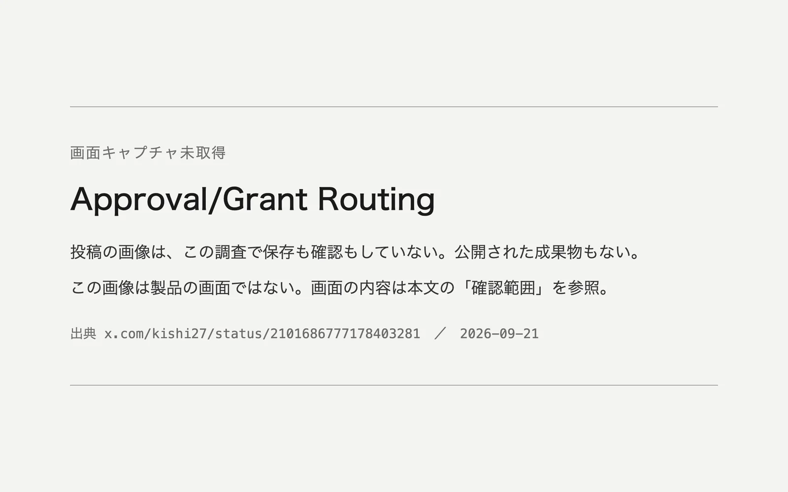

このUIがしていること
伝えられている内容が正しければ、この試みの要点は、曖昧なときの既定の動作にある。許可と読み切れない返事は、許可として扱わない。読み取り専用のまま、利用者に聞き返す。
- 判定が分かれたときに倒れる先が、安全な側（READ_ONLY）に決めてある。判断の誤りが、勝手な書き換えではなく、1回余分な確認として現れる。
- 判定の値と、選ばれた経路と、モードが並んで表示される、と伝えられている。なぜ聞き返されたのかを、利用者が読める形である。
- 日本語の口語は、承認と独り言の境目が曖昧になりやすい。キーワードの一致では扱いにくい入力を、判断に回している。
- 聞き返しの画面がどう見えるか、利用者が明示的に許可する手段がどうなっているかは、分からない。
キャプチャ
{kind=link}

（原寸の画像を開く）見る箇所掲載した画像は「画面キャプチャ未取得」の告知で、製品の画面ではない。投稿の画像は、要約によれば「Jevの判定の様子」というパネルで、判定の値、経路、モードが並ぶ
入力から画面の変化まで
-
判断への入力
エージェントの作業中に利用者が返す、日本語の短い返事。要約によれば、「承認しようかなー」や「じゃ～それで書き換えちゃってください」のような、承認とも取れる曖昧な文が例に挙がっている。
-
Jevの判断
要約によれば、返事が編集を許可しているか（grantsEdit 0.05）、質問にすぎないか（questionOnly 0.82）を判定する。値は要約による伝聞で、元の画像では確かめていない。
-
結果がUIをどう変えるか
要約によれば、経路は「ask_user」、モードは「READ_ONLY」と表示される。曖昧な返事では編集に進まず、利用者に聞き返す。
- 判断型の見立て
- 不明出典から判断できない
- 検索結果の要約が伝える値（grantsEdit、questionOnly）は確率のように見えるが、元の投稿の画像を確認していない。
Jevとの適合
短い返事が許可にあたるかどうかを、決まった問いで素早く判定する使い方は、Jevの低遅延に合う。エージェントの操作の直前に挟む判定は、遅いと作業の流れを止めるためである。ただし、この事例では、判定の精度も、実際の画面も確かめられていない。
確認範囲と未確認事項
根拠は限定的で、調査監査の評価はB（追加の確認が要る段階）。日本語の作者による投稿が根拠だが、投稿の画像は調査でも取得・確認されておらず、画面の内容は検索結果の要約が伝えるものにとどまる。数値とラベルは、その要約による伝聞である。作者個人の環境に組み込んだもので、公開された成果物はない。このサイトでは画面を掲載していない。
- 確認済み作者の投稿が存在し、Jevを承認の判定に使う試みを述べていること（調査の検索結果による）。それ以外に、このサイトで確認できた内容はない
- 未検証投稿の画像そのもの、判定の値とラベル（grantsEdit、questionOnly、ask_user、READ_ONLY）、聞き返しの画面、明示的に許可する手段、判定の精度、組み込み先のツールでの実際の動作
- 推定扱い質問型は不明として扱う。伝えられた値の形からは、はい・いいえの確率のように見えるが、元の画像で確かめていない
- 引用投稿の画像と画面は掲載していない。掲載した画像はこのサイトで作成した告知で、製品の画面ではない